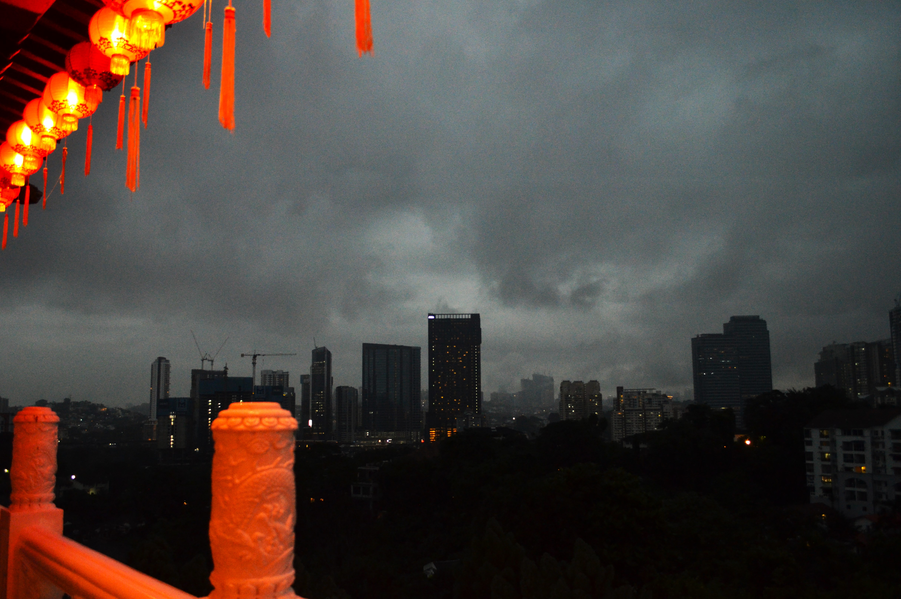
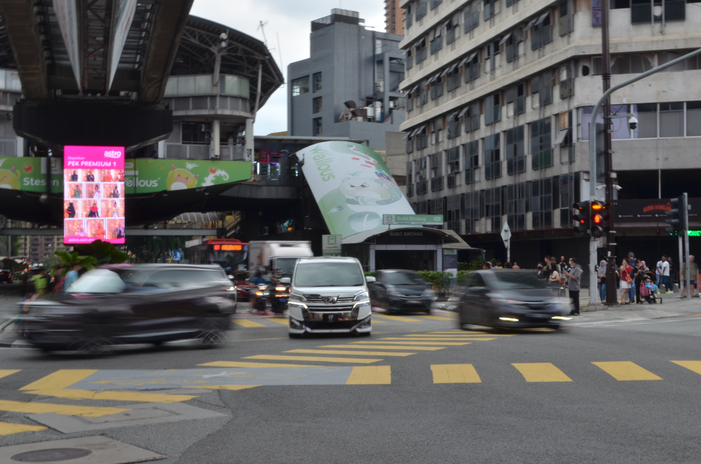
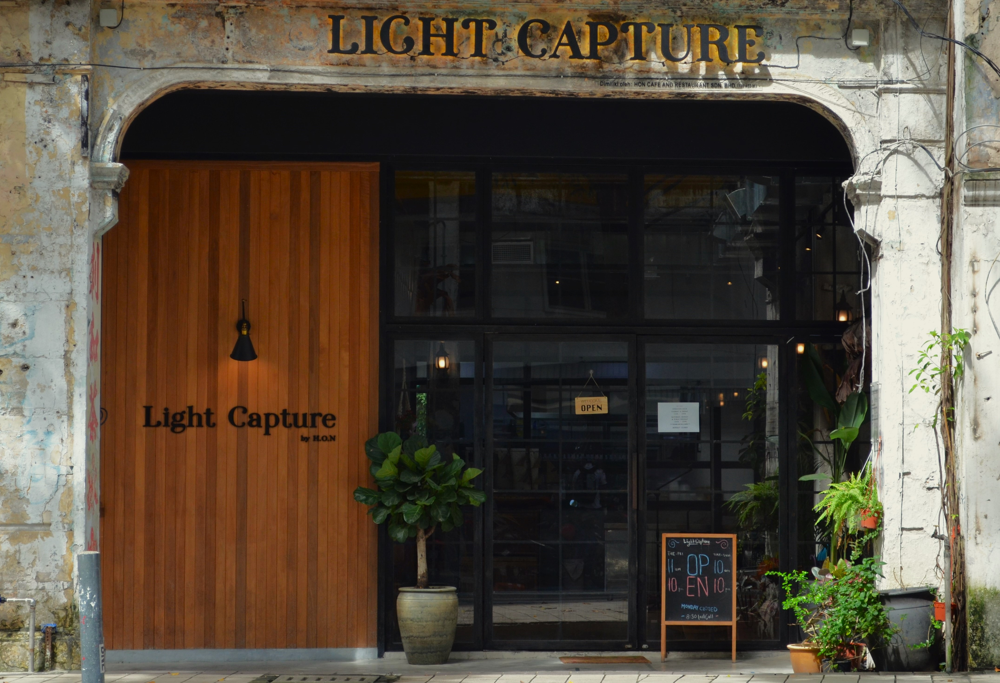
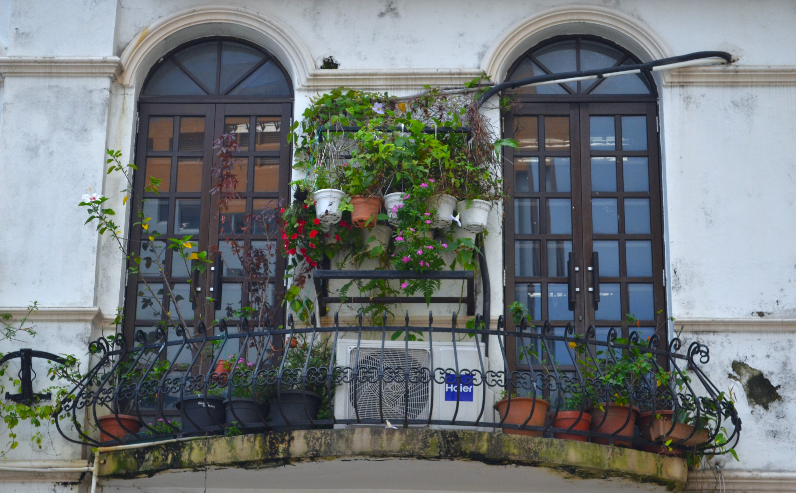
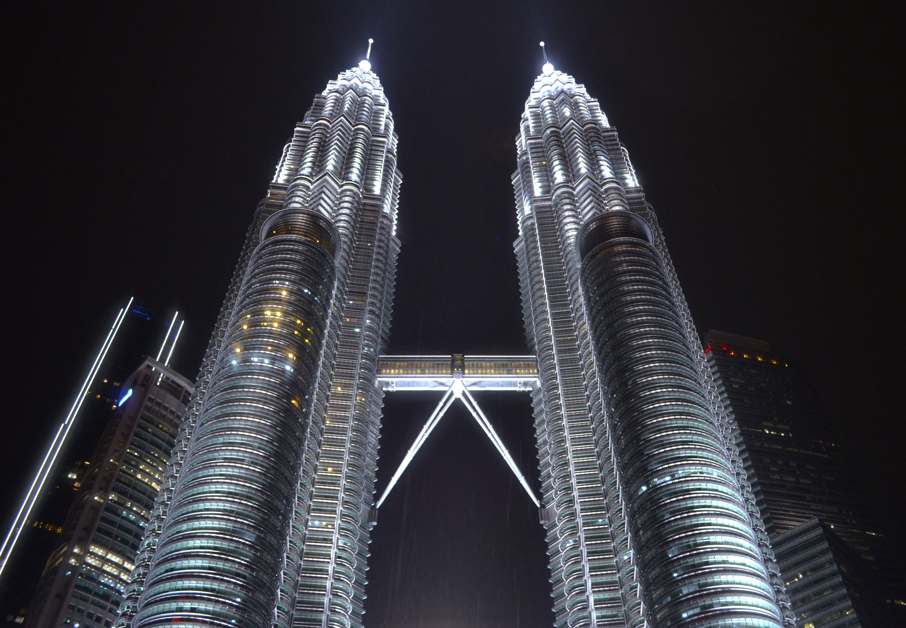
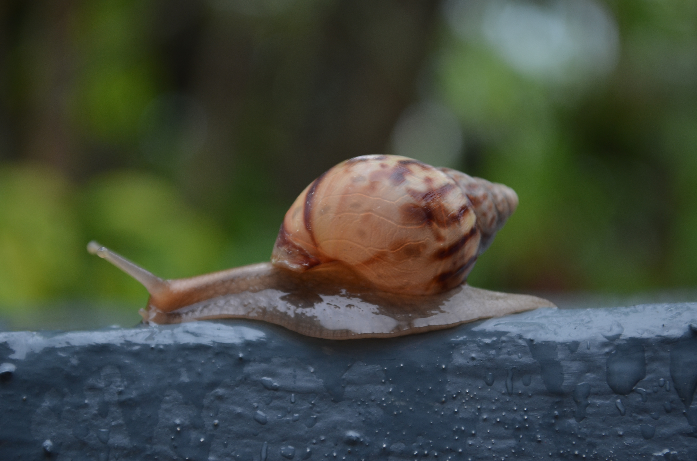
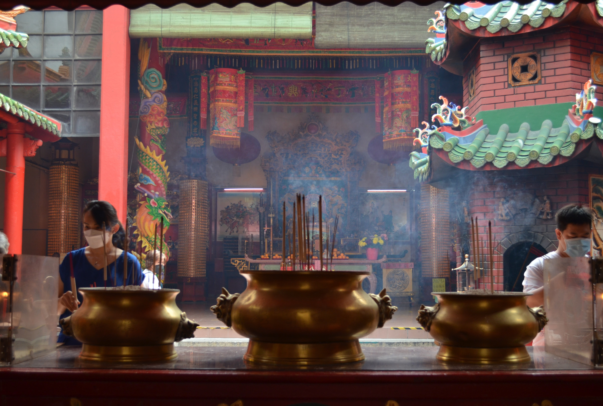
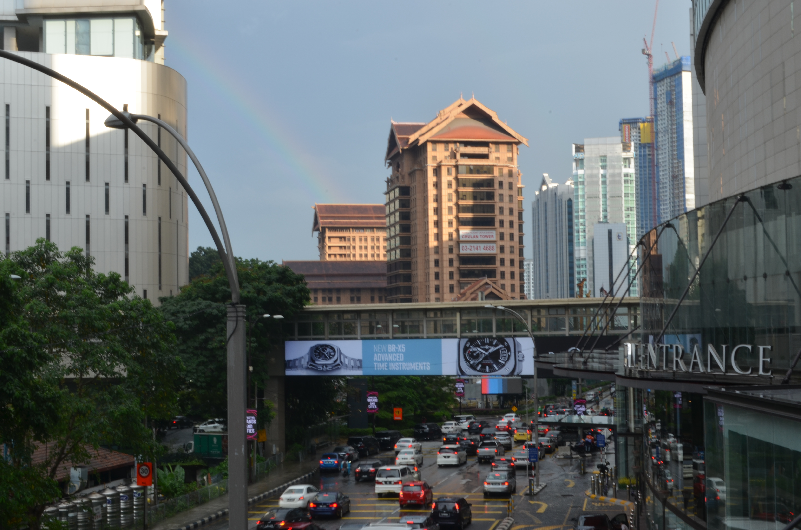

I shoot it from Dataran Merdeka and I use Adobe Photoshop to edit the picture.

It happened to be raining that day, and the weather and lanterns contrasted the Thean Hou Palace with the buildings outside.

Take a random photo on the road, and then use Photoshop to add filters to create a "cyberpunk" style street view.

Taken at the crossroads near the Pavilion KL.

I like the combination of this kind of ancient buildings and modern decoration, which is eye-catching.

Although it is on the balcony, it is a bit of a European-style courtyard style.

It's beautiful for night shots.

Shot in my yard.

Reflect the characteristics of Buddhism.

Popular Check-in Attractions.

Close to Pavilion KL, if you look closely, you can find a rainbow beside it.

In fact, the foreign tourist in the photo was taken by me by chance.